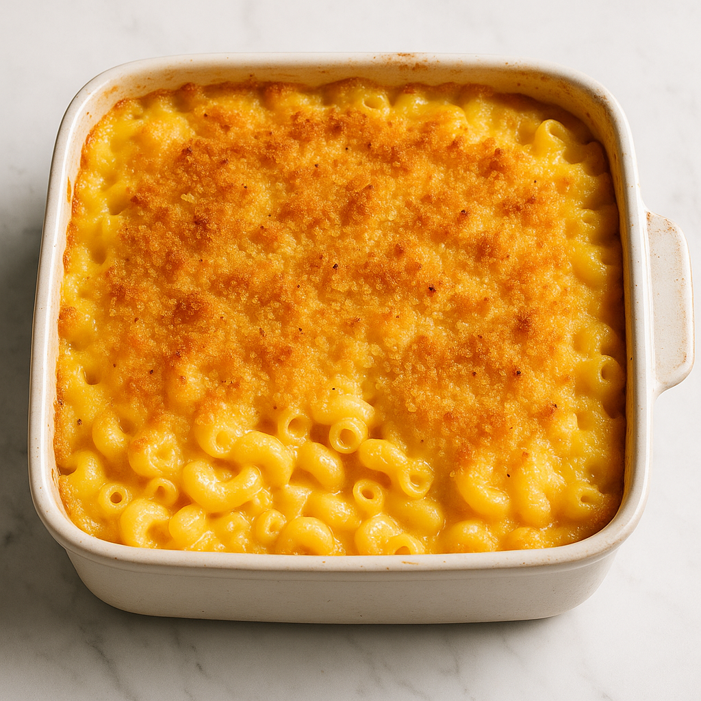

Home
Baked Macaroni and Cheese

Sooooo goooooood.
Ingredients
- 12 ounces elbow macaroni pasta
- 2 cups whole milk
- 1 large egg
- 2 ½ cups shredded Cheddar cheese
- 2 tablespoons butter, melted
- salt and pepper to taste
Steps:
- Preheat the oven to 350 degrees F (175 degrees C). Lightly grease a 2-quart baking dish.
- Boil macaroni in a large pot of salted water until barely done, about 5 minutes. Drain and set aside to cool slightly.
- Whisk milk and egg together in a large bowl; stir in cheese and butter.
- Place par-boiled macaroni in the prepared baking dish. Pour milk mixture over macaroni, season with salt and pepper, and stir until combined. Press mixture evenly into the baking dish.
- Bake, uncovered, in the preheated oven until top is golden brown, 30 to 40 minutes.
- Serve hot and enjoy!